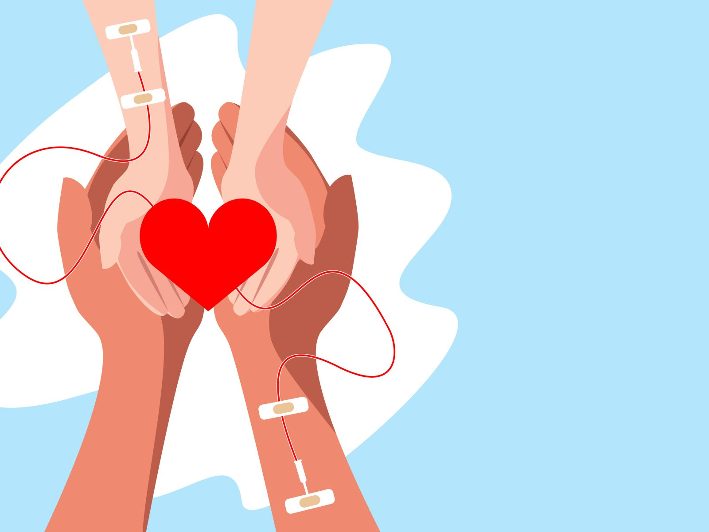

Your donated blood can make a significant difference, as it can be separated into various components to help different individuals in need. Join us in our blood donation drive and become a part of this noble cause. Your donation can help ensure that someone, somewhere, receives the gift of life. Together, we can make a positive impact on the health and well-being of our community.

Cleanup day
Community Cleanup Day is an event that brings residents and volunteers together to make a positive impact on their local environment. It's a day dedicated to improving the cleanliness and aesthetics of neighborhoods, parks, and public spaces. Participants, often armed with trash bags, gloves, and a strong sense of community spirit, gather to pick up litter, remove graffiti, plant trees, and engage in various activities aimed at enhancing their surroundings.